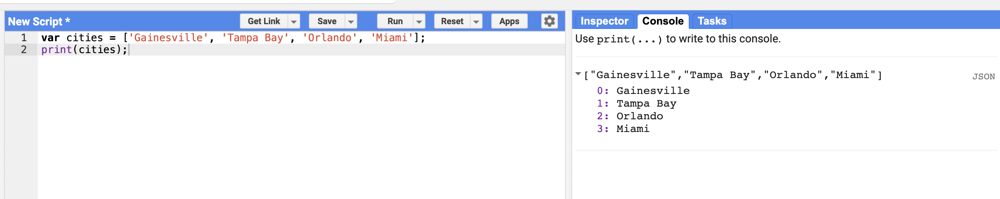

JavaScript Lists
Introduction to Lists
It is helpful to store multiple values in a single variable. JavaScript provides a data structure called a list (also known as an array) that can hold multiple values. We can create a new list using the square brackets [ ] and add multiple values separated by a comma.
Creating a List
Try putting this code into your Earth Engine Code Editor console and running it:
var cities = ['Gainesville', 'Tampa Bay', 'Orlando', 'Miami'];
print(cities);Understanding List Output
If you look at the output in the Console, you will see "List" with an expander arrow (▹) next to it. Clicking on the arrow will expand the list and show you its content.
You will notice that along with the four items in the list, there is a number next to each value. This is the index of each item. It allows you to refer to each item in the list using a numeric value that indicates its position in the list.

Key Concepts
- List syntax: Use square brackets
[ ]to create a list - Comma separation: Separate items with commas
- Zero-indexed: The first item has index 0, the second has index 1, etc.
- Mixed types: Lists can contain different data types (strings, numbers, etc.)
Accessing List Items
You can access individual items in a list using the .get() method in Earth Engine:
var cities = ['Gainesville', 'Tampa Bay', 'Orlando', 'Miami'];
var firstCity = cities.get(0);
print('First city:', firstCity);
var thirdCity = cities.get(2);
print('Third city:', thirdCity);Try It Yourself
Create your own list of values and experiment with:
- Creating a list with different numbers
- Making a list with more than 4 items
- Accessing different items using
.get() - Printing the entire list vs. individual items